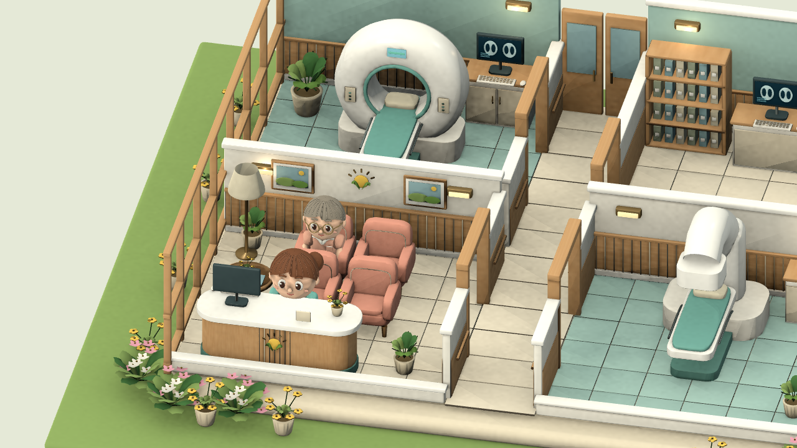
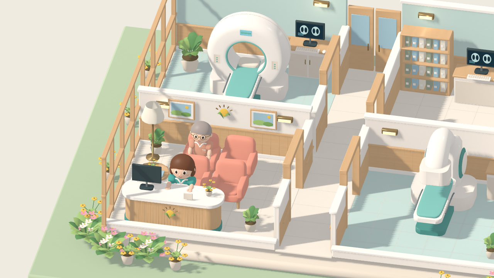
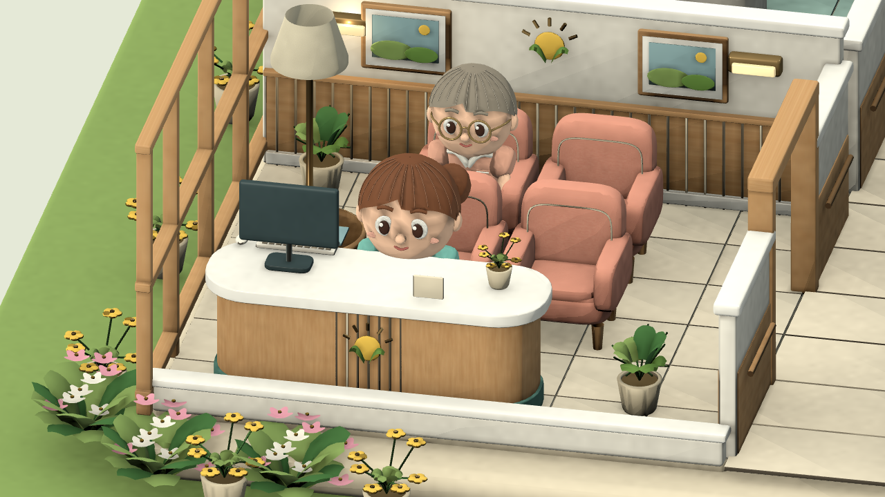
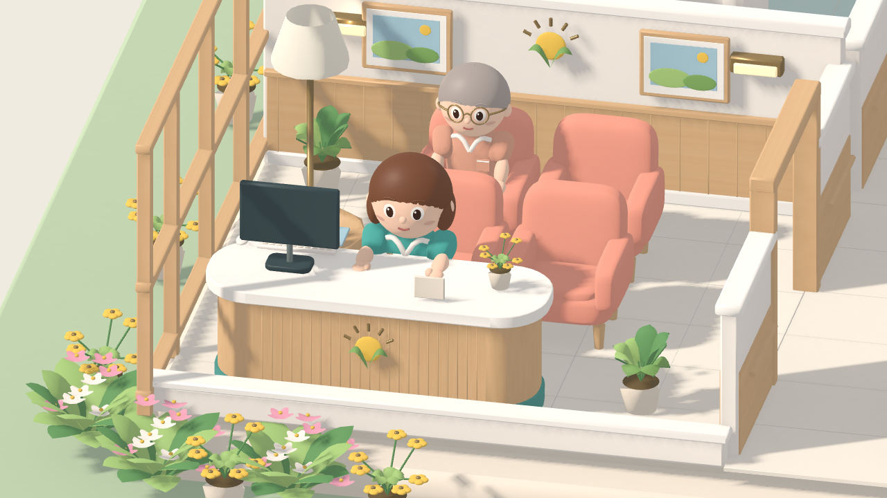
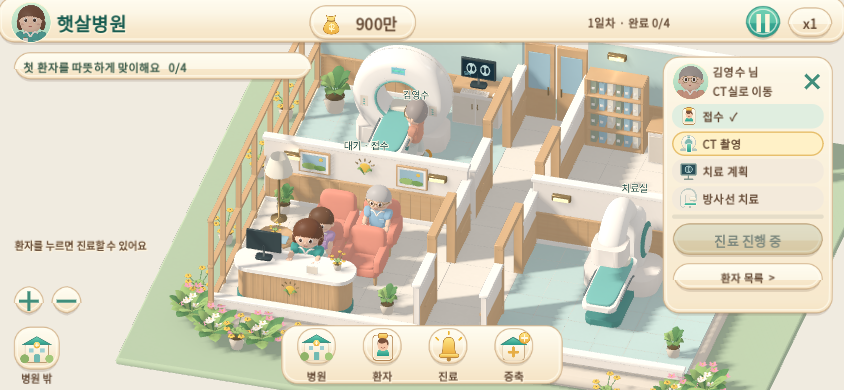

햇살병원 · 아트 & UI
Blender에서 제작한 실제 메시를 Godot 4.6.3 Compatibility에서 실행한 화면입니다. 슬라이더로 같은 카메라·같은 배치의 전후를 비교할 수 있습니다. 개선 전 화면의 소스는 e195a33입니다.
대표 장면 · UI 숨김


개선 전개선 후 · 실제 엔진형태와 표면 · 접수대 확대


개선 전개선 후 · 실제 엔진UI를 켠 실제 플레이
크림색 프레임과 청록색 행동 버튼, 실제 캐릭터 초상화, 접수→CT→계획→치료의 진행 표시. 숫자와 버튼은 실제 운영 상태에 연결되어 있습니다.

가로 터치 화면 · 844×390
Chromium 터치 에뮬레이션에서 환자 목록을 열고 접수한 직후입니다. 실제 iPhone Safari 성능 검증과는 구분합니다.

실제 엔진 플레이 영상
실제 버튼 입력의 자동 시연 · 진료 6배속 · 소프트웨어 렌더러 녹화. 영상의 프레임 수는 모바일 성능 수치가 아닙니다.
목표 이미지와 비교
대화에 첨부된 목표 시안의 크림·목재·코랄·민트 조합, 둥근 외곽, 창가 방향 빛, 갈색 단발 민지, 크림·청록 UI를 기준으로 검토했습니다. 첨부 원본을 다른 생성 이미지로 다시 만들거나 게임 배경으로 붙이지 않았습니다.
고급 캐릭터 조형과 얼굴 리그, 실내 간접광·세밀한 반사, 목표 시안의 정원 밀도는 추가 제작이 필요합니다. 이번 결과와 남은 차이는 변경·재질·환경 기록에서 확인할 수 있습니다.
기능·브라우저 검증 기록 · Blender 원본과 재생성 방법